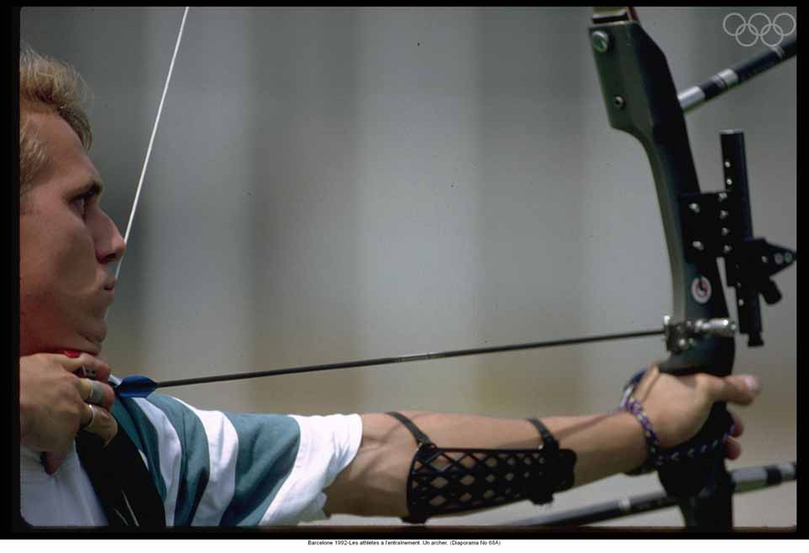
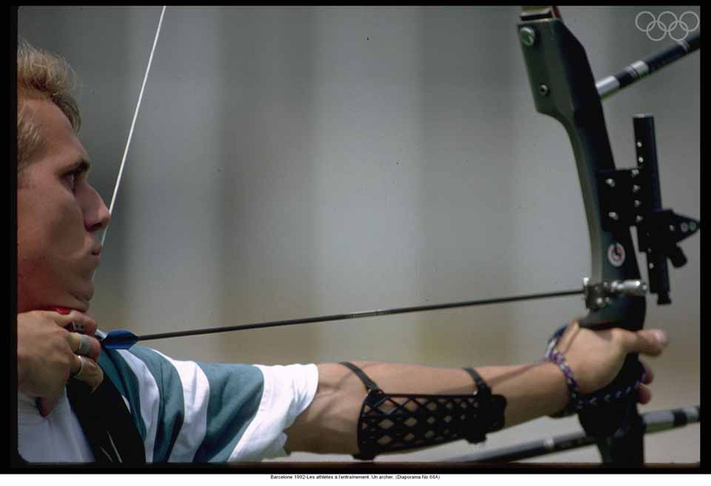

Vancouver 2010
The 2010 Winter Olympics, officially known as the XXI Olympic Winter Games, was a winter multi-sport event held in Vancouver
British Columbia, Canada, from February 12 to February 28. A total of 2,632 athletes representing 82 National Olympic Committees
(NOCs) (+2 from 2006 Olympics) participated in 86 events (+2 from 2006) from 15 different sports and disciplines (unchanged from 2006).
 
| COUNTRY | GOLD | SILVER | BRONZE | TOTAL |
|---|---|---|---|---|
| Canada (CAN) | 14 | 7 | 5 | 26 |
| Germany (GER) | 10 | 13 | 7 | 30 |
| United States (USA) | 9 | 15 | 13 | 37 |
| Norway (NOR) | 9 | 8 | 6 | 23 |
| GermanySouth Korea (KOR) | 6 | 6 | 2 | 14 |
| Switzerland (SUI) | 6 | 0 | 3 | 9 |
| China (CHN) | 5 | 2 | 4 | 11 |
| Sweden (SWE) | 5 | 2 | 4 | 11 |
| Austria (AUT) | 4 | 6 | 6 | 16 |
| Netherlands (NED) | 4 | 1 | 3 | 8 |